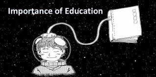
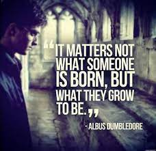
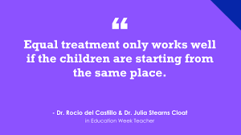
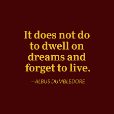
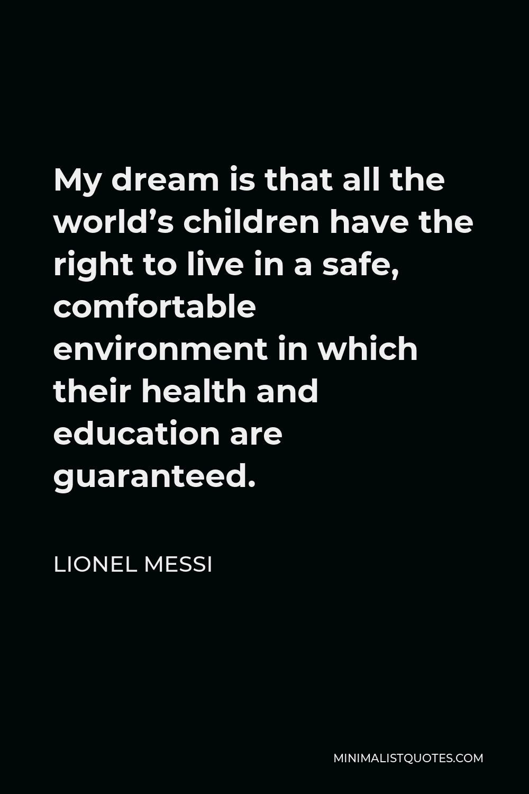
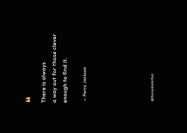

Importance Of Education

Importance of Education
Education helps a person to get knowledge and improve confidence in life. It can help you improve your career
and your personal growth. An educated person can become a great citizen in society. It helps you to take the right
decisions in life.
The modern, developed and industrialised world is running on the wheels of education.
To be able to survive in the competitive world, we all need education as a torch that leads the way.

Why Is Education Important?
1. Provides Stability
Education provides stability in life, and it’s something that no one can ever take
away from you.
By being well-educated and holding a college degree, you increase your chances for
better career
opportunities and open up new doors for yourself.
2. Provides Financial Security
On top of stability, education also provides financial security, especially in today’s society.
A good education tends to lead to a higher paying job, as well as provide you with the skills needed to get there.
3. Needed For Equality
In order for the entire world to really become equal, it needs to start with education. If everyone was provided
with the same opportunities to education, then there would be less gaps between social classes. Everyone would
be able to have an equal chance at higher paying jobs — not just those that are already well-off. Like this quote
says:

4. Allows For Self-Dependency
The importance of education is evident when it comes to being self-dependent. If we are we educated,
then it’s something that belongs to us, and only us, allowing us to rely on no one else other than ourselves.
It can allow you to not only be financially independent, but also to make your own choices.
5. Make Your Dreams Come True
If you can dream it, you can achieve it. An education is the most powerful weapon you can possibly have, and with it,
you can make all of your dreams come true. There are of course certain exceptions, depending on what you’re aiming for,
but generally an education will take you as far as you’re willing to go. But we should not lose focus in our studies by just
dreaming. We should focus on our education.

6. A Safer World
Education is something that’s not only needed on a personal level, but also on a global level,
as it’s something that keeps our world safe and makes it a more peaceful place. Education tends to teach people the
difference between right and wrong, and can help people stay out of risky situations.

Conclusion
Education is a ray of light in the darkness. It certainly is a hope for a good life. Education is a basic right of every
Human on this Planet. To deny this right is evil. Uneducated youth is the worst thing for Humanity. Above all,
the governments of all countries must ensure to spread Education.
Education is the pathway for a nation's progress. Education is the backbone of society. The government should take all
measures to provide education to every individual of the country. This will bring equality among people and when people
improvise their way of living, they become more responsible towards society.
